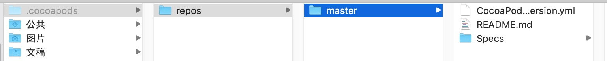

本文最后更新于：8 个月前
CocoaPods是iOS开发进行依赖管理的工具，可以方便开发人员引用和更新Github上的开源代码，本次记录下安装CocoaPods时的过程和遇到的问题。
一、Ruby环境
1、Ruby版本
ruby是一种脚本语言，cocoapods就是ruby语言编写的，所以要首先确认ruby环境，打开macOS系统的终端程序，使用以下命令行查看ruby版本
我的两台mac都装了同一个系统，输出结果如下：
1
2
3
4
5
|
ruby 2.2.2p95 (2015-04-13 revision 50295) [x86_64-darwin14]
ruby 2.3.7p456 (2018-03-28 revision 63024) [universal.x86_64-darwin17]
|
15款的mac是一次一次升级系统升上来的，17款的是全新系统自带的，虽然是同一个系统版本，但是看到ruby不一样，由此可见，每次升级系统时ruby环境并不会随之升级。
通常情况下系统自带的ruby环境可以直接安装cocoapods，如果觉得ruby环境过低，需要升级ruby环境，那么暴力一点，可以直接抹掉系统重新安装，当然，我们还可以使用正常的方法升级
2、Ruby升级
Ruby环境有个工具叫版本管理器，英文Ruby Version Manager，简称RVM，主要就是用来管理ruby版本的，macOS系统没有自带这个工具，所以需要先安装此工具。
RVM有官方网站https://www.rvm.io/
- 按照官方说明，首先需要安装
GPG秘钥，macOS没有安装工具，所以不能直接安装秘钥
安装GPG组件可以有两种安装方法
安装过程中可能出现报错，可以自行搜索解决，我是通过vpn下载了GPG官网的安装包，直接进行的安装，安装完成后根据提示设置即可
GPG安装成功后，再执行RVM官网提供的命令行，既可成功安装rvm工具
请确保网络环境的正常访问，否则会安装失败，使用命令行查看rvm版本rvm -v，可确认是否安装成功
1
| rvm 1.29.7 (latest) by Michal Papis, Piotr Kuczynski, Wayne E. Seguin [https://rvm.io]
|
- 安装
ruby新版本
1
2
3
4
5
6
7
8
9
10
11
12
13
14
15
|
$ rvm list known
# MRI Rubies
[ruby-]1.8.6[-p420]
[ruby-]1.8.7[-head] # security released on head
[ruby-]1.9.1[-p431]
[ruby-]1.9.2[-p330]
[ruby-]1.9.3[-p551]
[ruby-]2.0.0[-p648]
[ruby-]2.1[.8]
[ruby-]2.2[.4]
[ruby-]2.3[.0]
[ruby-]2.2-head
ruby-head
|
1
2
| //安装2.3.0版本
$ rvm install 2.3.0
|
1
2
|
$ rvm use 2.3.0 --default
|
二、安装CocoaPods环境
RubyGems，简称gems是一个用于对Ruby组件进行打包的Ruby打包系统。macOS系统已集成了gem环境。
1、使用命令行安装cocoapods
1
| $ sudo gem install cocoapods
|
2、切换ruby软件源
ruby的默认软件源https://rubygems.org，是亚马逊的服务，国内无法访问，需要切换为国内的镜像https://gems.ruby-china.com/，按照镜像网站上的命令行切换即可
1
| $ gem sources --add https://gems.ruby-china.com/ --remove https://rubygems.org/
|
使用-l命令确保只有gems.ruby-china.com的软件源
1
2
3
| *** CURRENT SOURCES ***
https://gems.ruby-china.com/
|
3、镜像索引替换
github上所有的项目的podspec都保存在https://github.com/CocoaPods/Specs.git，我们需要把保存的所有索引下载到本地，这样才能在执行pod命令时正常获取到github上的资源路径，虽然索引信息不大，只有几百兆，但是由于数量很多，检索起来非常耗时，国内访问github速度非常慢，所以建议使用https://gitclub.cn/CocoaPods/Specs.git替换，如下：
1
| $ git clone https://gitclub.cn/CocoaPods/Specs.git ~/.cocoapods/repos/master
|
使用git clone方法拷贝到本地，后面的~/.cocoapods/repos/master目录是本地的目录，一般我们将cocoapods目录做成隐藏目录，并放在系统根目录下，目录结构repos/master，执行命令行时，会自动在根目录下创建.cocoapods的隐藏目录，使用终端工具可以查看到该隐藏目录。
注意：此命令行较为耗时，请确保网络环境的顺畅，同时建议先排查本机环境配置，争取一次成功，常见报错及配置如下：
RPC failed; curl 56 LibreSSL SSL_read: SSL_ERROR_SYSCALL, errno
此系列报错均可以通过配置解决，具体按errno后面的报错码决定，可依次检查以下配置：
- 设置
postBuffer值大一点，1048576000是1000M
Xcode配置问题
1
| sudo xcode-select -switch /Applications/Xcode.app/Contents/Developer
|
根据你默认的Xcode来修改在/Applications/和/Contents/Developer中间的app的名字
如果git clone的命令下载速度很慢，那么可以使用其他下载工具，直接下载zip格式或其他格式压缩包，github和gitclub都提供了压缩包的下载方式，使用第三方客户端下载会比较快速下载完之后，需要手动创建.cocoapods目录，并将压缩包解压后组成完成的目录~/.cocoapods/repos/master

4、setup指令
git拷贝成功后，需要执行如下命令：
继续等待一段时间后，cocoapods环境即全部安装成功，
同样需要注意网络顺畅
三、pod版本修改
不同版本的cocoapods在应用第三方代码时有不同的地方，有时会导致头文件报错，或者引用失败等情况，通过--version查看安装的pod版本
上面安装时install命令没有指定版本号，所以默认安装的是最新的版本，通过gem命令查看所有的pod版本
如下：
1
2
3
4
5
6
7
8
9
10
11
12
13
14
15
16
17
18
19
20
21
22
23
24
25
26
27
28
29
30
31
32
33
34
35
36
37
38
39
40
41
42
43
44
| *** LOCAL GEMS ***
activesupport (4.2.11.1)
atomos (0.1.3)
bigdecimal (1.2.8)
CFPropertyList (3.0.0, 2.2.8)
claide (1.0.2)
cocoapods (1.6.1)
cocoapods-core (1.6.1)
cocoapods-deintegrate (1.0.3)
cocoapods-downloader (1.2.2)
cocoapods-plugins (1.0.0)
cocoapods-search (1.0.0)
cocoapods-stats (1.1.0)
cocoapods-trunk (1.6.1)
cocoapods-try (1.1.0)
colored2 (3.1.2)
concurrent-ruby (1.1.5)
did_you_mean (1.0.0)
escape (0.0.4)
fourflusher (2.2.0, 2.0.1)
fuzzy_match (2.0.4)
gh_inspector (1.1.3)
i18n (0.9.5)
io-console (0.4.5)
json (1.8.3.1)
libxml-ruby (2.9.0)
minitest (5.8.5)
molinillo (0.6.6, 0.5.7)
nanaimo (0.2.6)
nap (1.1.0)
net-telnet (0.1.1)
netrc (0.11.0)
nokogiri (1.5.6)
power_assert (0.2.6)
psych (2.1.0.1)
rake (10.4.2)
rdoc (4.2.1)
ruby-macho (1.4.0)
sqlite3 (1.3.11)
test-unit (3.1.5)
thread_safe (0.3.6)
tzinfo (1.2.5)
xcodeproj (1.8.1)
|
当前安装的为cocoapods (1.6.1)版本，我们要切换到1.3.1的版本，通过uninstall的命令即可实现
1
| $ gem uninstall cocoapods -v 1.6.1
|
当移除最后一个版本时，会提示
1
2
3
4
| Remove executables:
pod, sandbox-pod
in addition to the gem? [Yn]
|
回车或者Y进行确认，删除pod目录，再安装执行版本即可
1
| $ gem install cocoapods -v 1.3.1
|
注意：如果出现关于文件权限的报错问题，或者删除命令无效，可以使用sudo系统管理员的权限重复操作
四、附录：
摘自https://kaqijiang.github.io/mac工具/2018/03/09/Mac安装Ruby版本管理器-RVM.html
1
2
3
4
5
6
7
8
9
10
11
12
13
| $ ruby -v
$ rvm list known
$ rvm install 2.3.0
$ rvm get stable
$ rvm use 2.2.2
$ rvm use 2.2.2 --default
$ rvm list
$ rvm remove 1.9.2
$ curl -L https://get.rvm.io | bash -s stable
$ curl -sSL https://get.rvm.io | bash -s stable --ruby
$ curl -sSL https://get.rvm.io | bash -s stable --ruby=2.3.0
$ source ~/.rvm/scripts/rvm
|
1
2
3
4
5
6
7
8
9
10
11
12
13
14
15
16
17
18
19
20
21
22
23
24
25
26
27
28
29
30
31
32
33
34
35
36
37
38
39
| $ gem -v
$ gem source
$ gem source -l
$ gem sources -a url
$ gem sources --add url
$ gem sources -r url
$ gem sources --remove url
$ gem update
$ gem update --system
$ gem install rake
$ gem install rake --remote
$ gem install watir -v 1.6.2
$ gem install watir --version 1.6.2
$ gem uninstall rake
$ gem list d
$ gem query -n ''[0-9]'' --local
$ gem search log --both
$ gem search log --remoter
$ gem search -r log
$ gem help
$ gem help install
$ gem help examples
$ gem build rake.gemspec
$ gem check -v pkg/rake-0.4.0.gem
$ gem cleanup
$ gem contents rake
$ gem dependency rails -v 0.10.1
$ gem environment
$ sudo gem -v
$ sudo gem install cocoa pods
$ sudo gem install cocoapods
$ sudo gem install cocoapods --pre
$ sudo gem install cocoapods -v 0.39.0
$ sudo gem update cocoapods
$ sudo gem update cocoapods --pre
$ sudo gem uninstall cocoapods -v 0.39.0
|
1
2
3
| $ pod setup
$ pod --version
$ pod install
|